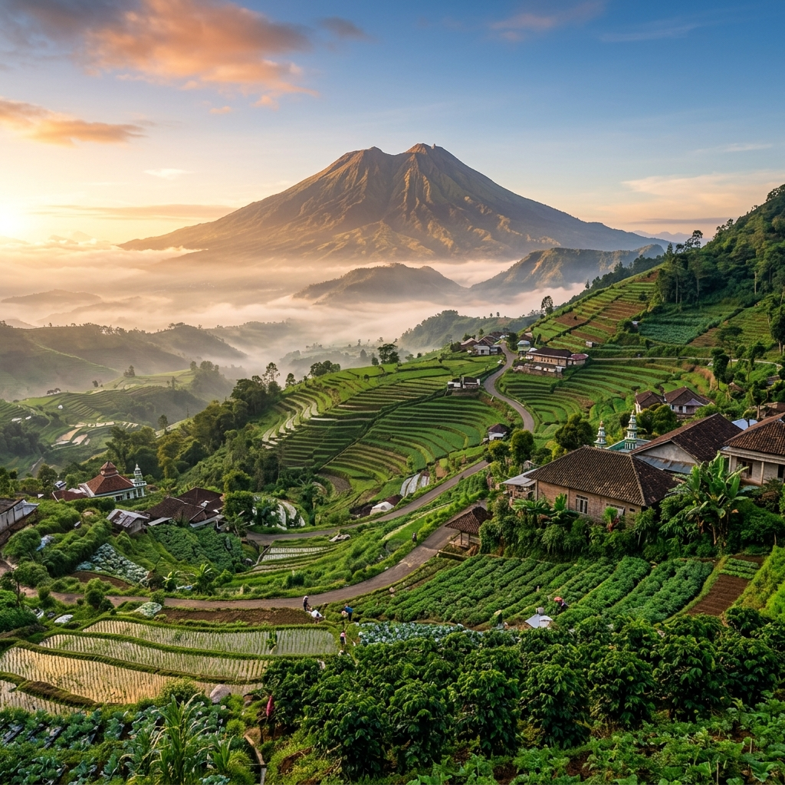
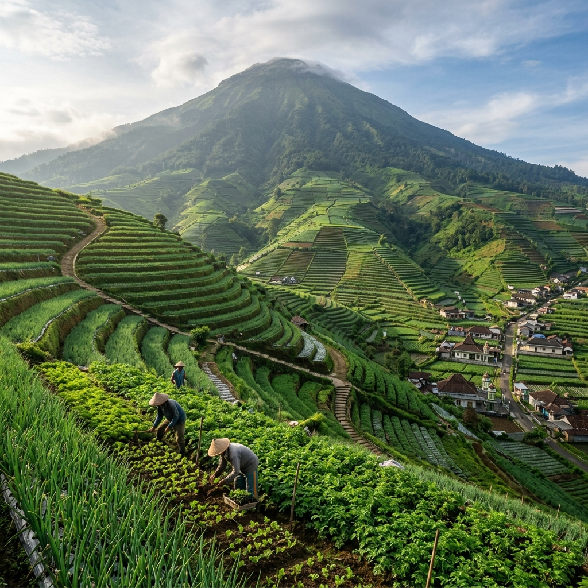
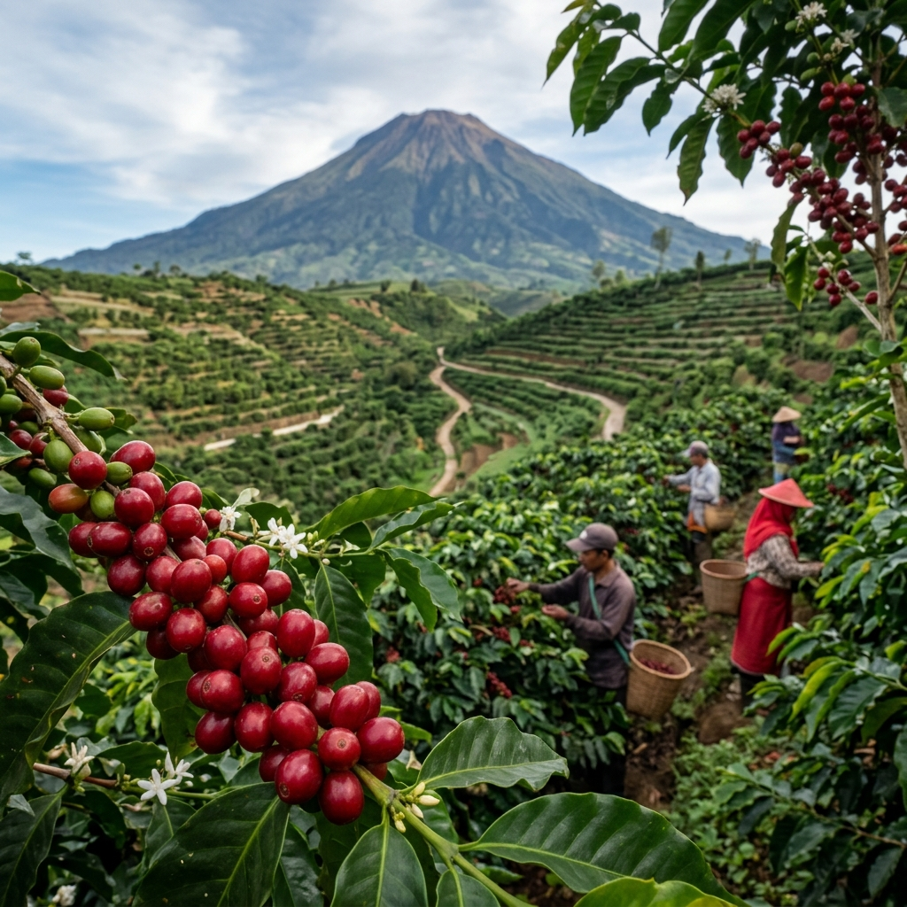
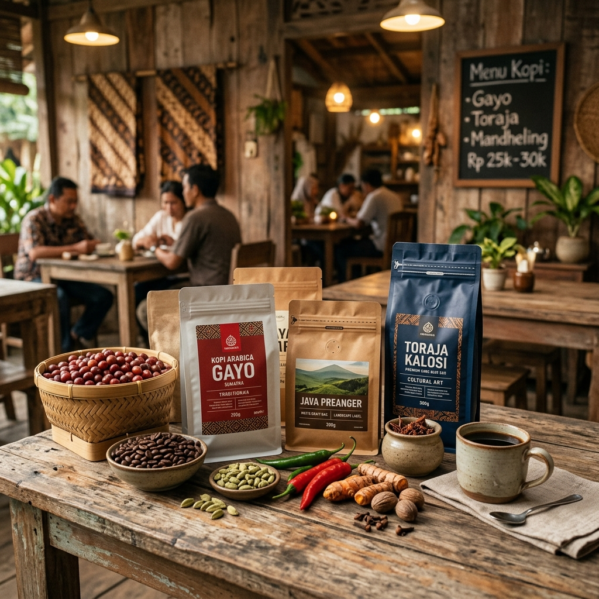
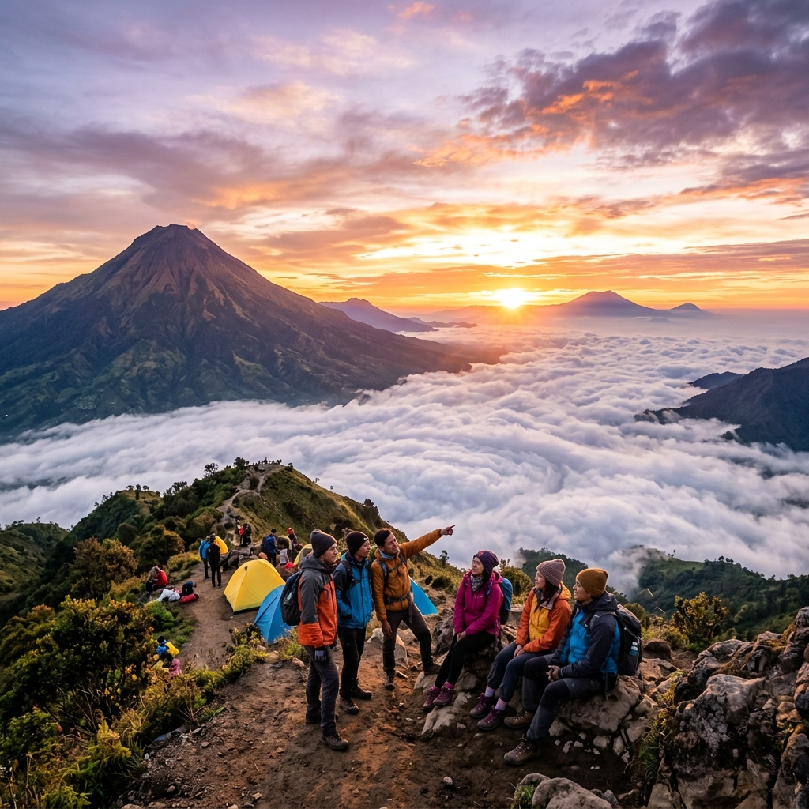
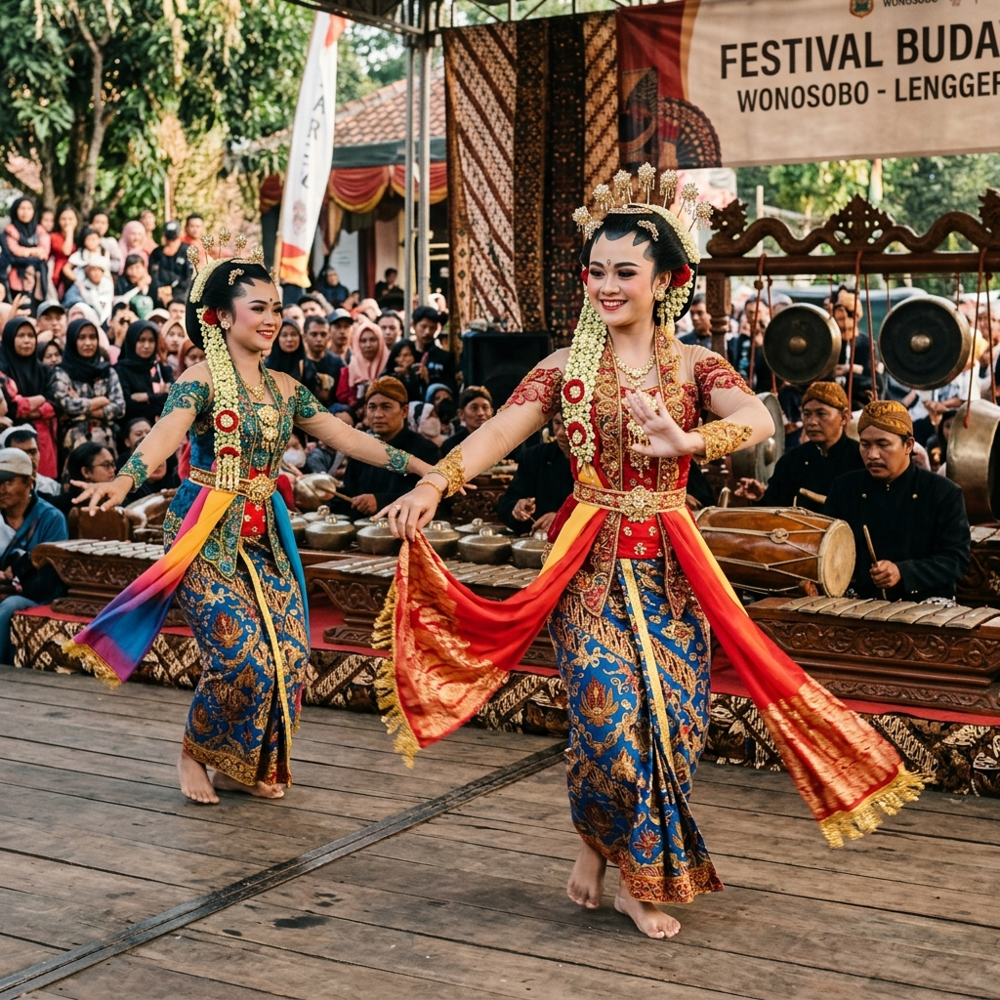

Judul Gambar
Deskripsi detail mengenai gambar.
Desa Wisata dan Sentra Kopi Arabika Organik di Lereng Barat Gunung Sumbing, Wonosobo
Desa Bowongso merupakan permukiman berhawa sejuk yang terletak di bawah kaki megah Gunung Sumbing, dikaruniai tanah yang subur dan warisan budaya yang adiluhung.
Terletak pada ketinggian sekitar 1.400 - 1.800 mdpl di Kecamatan Kalikajar, Wonosobo, Desa Bowongso menawarkan harmoni yang indah antara bentang alam pegunungan yang asri, kehidupan agraris yang produktif, serta keramahtamahan khas masyarakat pedesaan Jawa Tengah.
Komunitas kami dikenal sebagai perintis pertanian organik berkelanjutan dan penghasil salah satu biji kopi Arabika dengan cita rasa terbaik di Nusantara, yang ditanam secara selaras berdampingan dengan alam pegunungan.



Kisah awal terbentuknya Desa Bowongso dari masa pelarian prajurit Pangeran Diponegoro hingga perkembangannya...
Baca Selengkapnya →Tujuan besar kami untuk memajukan pembangunan desa secara mandiri, berbudaya, dan berwawasan lingkungan...
Baca Selengkapnya →Terletak di lereng barat Gunung Sumbing pada ketinggian ekstrem 1.400 - 1.800 mdpl dengan batas-batas...
Baca Selengkapnya →Susunan organisasi aparat desa, pengurus Badan Permusyawaratan Desa (BPD), dan prinsip pelayanan kami...
Baca Selengkapnya →Ringkasan data statistik resmi Desa Bowongso yang terperinci dan diperbarui secara berkala.
Berbagai sektor keunggulan yang menjadi pilar kehidupan, kemandirian ekonomi, serta daya tarik wisata utama di desa kami.
Lereng subur Gunung Sumbing diberkahi pertanian bawang merah, kentang, kubis, dan sayur dataran tinggi organik berkualitas premium yang didistribusikan ke pasar-pasar besar Jawa Tengah.
Biji kopi Arabika yang tumbuh di atas ketinggian 1.600 mdpl memiliki rasa khas tembakau dan jeruk (citrusy note). Diolah secara profesional oleh koperasi tani menjadi produk unggulan Wonosobo.

UMKMMulai dari hilirisasi kopi bubuk kemasan, pembuatan keripik kentang lokal, teh herbal lereng Sumbing, hingga kerajinan bambu tradisional kreasi terampil para ibu PKK desa.

WisataJalur legendaris pendakian Gunung Sumbing via Bowongso, camping ground Gardu Pandang, wisata kebun kopi terpadu, dan fenomena keindahan samudera awan saat fajar menyingsing.
Kumpulan potret momen, kebudayaan, lanskap alam, serta geliat roda aktivitas keseharian warga Desa Bowongso.

Ikuti perkembangan terbaru mengenai program pembangunan desa, kegiatan masyarakat, serta event-event menarik di Desa Bowongso.
Desa Bowongso sukses menyelenggarakan Festival Kopi tahunan yang bertujuan mengenalkan keunikan cita rasa Arabika Sumbing ke kancah nasional, dihadiri penikmat kopi dari luar daerah.
Baca SelengkapnyaWarga Desa Bowongso menggelar tradisi Nyadran dan pelestarian seni budaya tari Lengger massal sebagai ungkapan syukur atas kelimpahan air bersih dan kesuburan pertanian.
Baca SelengkapnyaPemerintah Desa Bowongso merampungkan pembangunan jalan beton usaha tani sepanjang 500 meter untuk mempermudah petani mengangkut hasil panen dari area perkebunan lereng bukit.
Baca SelengkapnyaKami berkomunikasi secara terbuka. Silakan hubungi kami atau kunjungi Balai Desa untuk layanan administrasi dan informasi pariwisata.
Jl. Raya Bowongso No. 1, Desa Bowongso, Kec. Kalikajar, Kabupaten Wonosobo, Jawa Tengah, Indonesia, 56352
+62 812-3456-7890 (Kantor Desa)
info@bowongso.desa.id
Senin - Jumat | 08:00 - 14:00 WIB (Sabtu-Minggu Libur)
Deskripsi detail mengenai gambar.